Unidades Didácticas
Interactivas para la Universidad


|
|
Unidades Didácticas Interactivas para la Universidad |
|
|
que implemente el Canvas de HTML5, como por ejemplo: Google Chrome, Mozila Firefox o Safari |
|
Un_062_TermodinamicaConceptosBasicos Descargar |
Conceptos básicos de la termodinámica
A través de una conversación con un tutor digital y la observación y/o manipulación simultánea de modelos interactivos, el estudiante se familiarizará con algunos conceptos básicos de la termodinámica, como el calor, la temperatura, el equilibrio térmico y el concepto cero de la termodinámica. Área: Física, Fisicoquímica, Termodinámica Nivel: Licenciatura, Bachillerato |
|
|
Un_063_LeyesDeLosGases 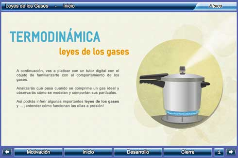 Descargar |
Leyes de los gases
A través de una conversación con un tutor digital y la observación y/o manipulación simultánea de modelos interactivos, el estudiante analizará, tanto a nivel macro como submicroscópico, el comportamiento de un gas que está siendo comprimido dentro de un cilindro con un émbolo. Esto le permitirá conocer y entender la ley general de los gases, y las leyes de Boyle y Gay-Lussac en particular. Área: Física, Fisicoquímica, Termodinámica Nivel: Licenciatura, Bachillerato |
|
|
Un_064_PrimeraLeyDeLaTermodinamica 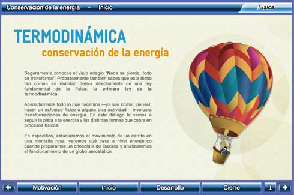 Descargar |
Conservación de la energía
A través de una conversación con un tutor digital y la observación y el análisis de modelos y ejemplos interactivos, el estudiante conocerá la primera ley de la termodinámica y sabrá reconocerla en fenómenos variados de la vida cotidiana. Área: Física, Fisicoquímica, Termodinámica Nivel: Licenciatura, Bachillerato |
|
|
Un_065_MaquinaTermica 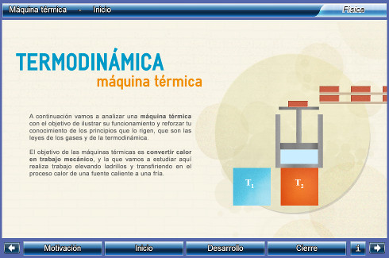 Descargar |
Máquina térmica
A través de una conversación con un tutor digital y la observación y el análisis simultáneos de una máquina térmica, el estudiante revisará algunas leyes fundamentales de la termodinámica y de los gases ideales. Área: Física, Fisicoquímica, Termodinámica Nivel: Licenciatura, Bachillerato |
|
|
Un_066_SegundaLeyDeLaTermodinamica 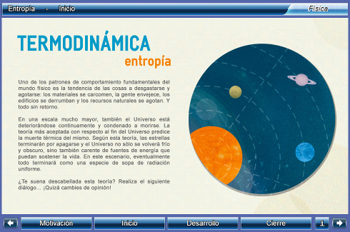 Descargar |
Entropía
A través de una conversación con un tutor digital y la observación y/o manipulación simultánea de modelos y ejemplos interactivos, el estudiante conocerá y entenderá el concepto de entropía y la segunda ley de la termodinámica. Área: Física, Fisicoquímica, Termodinámica Nivel: Licenciatura, Bachillerato |
|
|
Un_067_MovimientoBrowniano 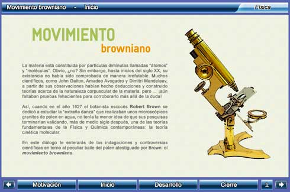 Descargar |
Movimiento browniano
A través de una conversación con un tutor digital y la exploración simultánea de modelos interactivos y simulaciones, el estudiante hará observaciones, formulará hipótesis y realizará inferencias con el objeto de entender el movimiento browniano, así como su papel en la corroboración del modelo cinético de los fluidos y la naturaleza corpuscular de la materia. Asimismo, comprenderá la importancia del trabajo de Albert Einstein en la explicación de dicho fenómeno. Área: Física, Fisicoquímica, Bioquímica Nivel: Licenciatura, Bachillerato |
|
|
Un_068_EfectoFotoelectrico 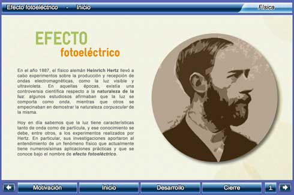 Descargar |
Efecto fotoeléctrico
A través de una conversación con un tutor digital y la observación y/o manipulación simultánea de modelos y simuladores, el estudiante conocerá y entenderá el efecto fotoeléctrico, así como las aplicaciones tecnológicas que tiene. Área: Física, Fisicoquímica, Electromagnetismo Nivel: Licenciatura, Bachillerato |
|
|
Un_069_DecaimientoNuclear 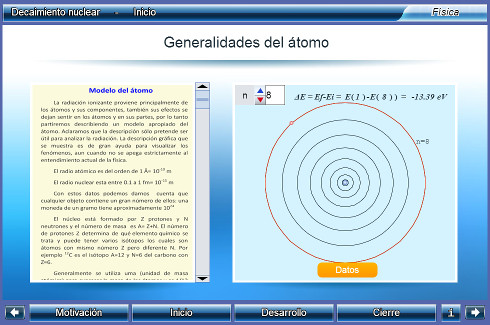 Descargar |
Decaimiento Nuclear
En esta unidad didáctica el estudiante comprenderá el comportamiento del decaimiento radiactivo mediante la determinación de la vida media de una muestra radiactiva. Área: Física, Mecánica, Física Moderna Nivel: Licenciatura, Bachillerato |
|
|
Un_070_RadiacionDeCuerpoNegro 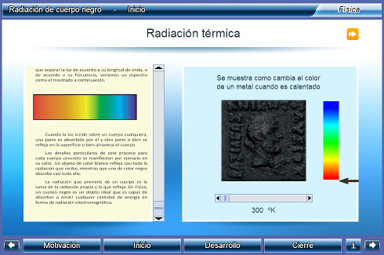 Descargar |
Radiación de cuerpo negro
En esta unidad didáctica el estudiante conocerá las teorías que se desarrollaron con la intención de darle solución al problema de la radiación del cuerpo negro. Además conocerá el proceso para encontrar el valor de la constante de Planck por medio de el efecto fotoeléctrico. Área: Física, termodinámica, Física Moderna Nivel: Licenciatura, Bachillerato |
|
|
Un_072_EsfuerzosPorFlexionEnVigas 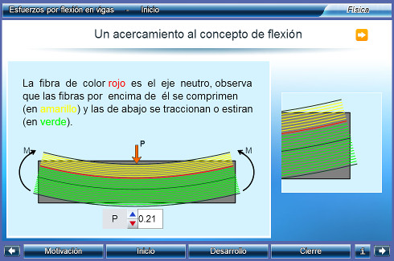 Descargar |
Esfuerzos por flexión en vigas
Una viga es un elemento estructural que se somete a cargas que actúan transversalmente al eje longitudinal, originando deformaciones y esfuerzos internos. Es importante, para el diseño de estos elementos, comprender el concepto de flexión, la curva elástica generada y cómo se determinan las deformaciones y esfuerzos internos. En esta unidad puede ayudar a comprender el concepto de flexión en una viga sometida a cargas externas y a calcular los esfuerzos por flexión. Área: Física, Mecánica, Estática Nivel: Licenciatura, Bachillerato |
|
|
Un_073_MomentosDeInerciaDeUnaSuperficie 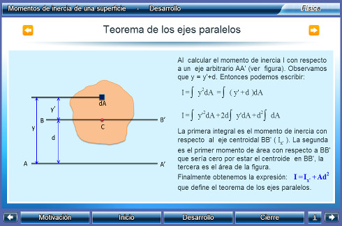 Descargar |
Momentos de inercia de una superficie
En el análisis y diseño mecánico o estructural, es importante conocer las propiedades geométricas de los elementos que conforman la estructura, tales como vigas, columnas, barras, correas, etcétera. En general, para las secciones de un elemento, las propiedades más utilizadas son: área, módulo de sección, radio de giro, centroide y momento de inercia. En esta unidad didáctica el estudiante podrá: Comprender el significado del momento de inercia, y calcular los momentos rectangulares de inercia de una sección simple o compuesta. Área: Fìsica, Mecánica, Estática Nivel: Licenciatura |
|
|
Un_074_MomentoDeUnaFuerza 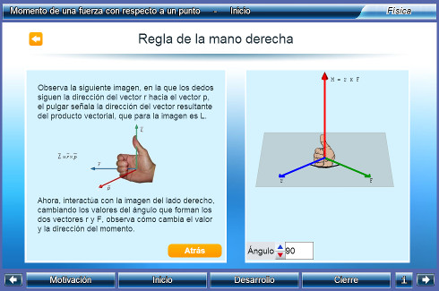 Descargar |
Momento de una fuerza con respecto a un punto
Con esta unidad didáctica el estudiante podrá comprender y aplicar el concepto de momento de una fuerza con respecto a un punto, a través de vídeos, objetos interactivos de aprendizaje y la solución varios de problemas propuestos. Área: Fìsica, Mecánica, Estática Nivel: Licenciatura |
|
|
Un_075_EstaticaDeUnaParticula 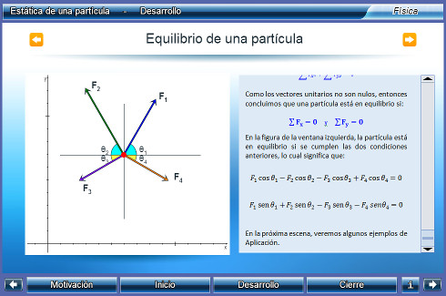 Descargar |
Estática de una partícula
En la estática de una partícula, son varios los objetivos de aprendizaje a lograr. Un primer objetivo es determinar la resultante de varias fuerzas coplanares, con el método gráfico o el analítico. Un segundo objetivo, es hallar el valor de una fuerza, considerando las ecuaciones de equilibrio de la partícula. Área: Fìsica, Mecánica, Estática Nivel: Licenciatura |
|
|
Un_076_FuerzasDistribuidas 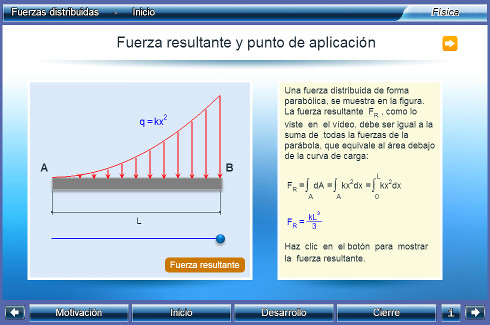 Descargar |
Fuerzas distribuidas
El objetivo de esta unidad es aprender a reducir una o más fuerzas distribuidas a una fuerza puntual resultante. Área: Fìsica, Mecánica, Estática Nivel: Licenciatura |
|
|
Un_077_EquilibrioCuerpoRigido 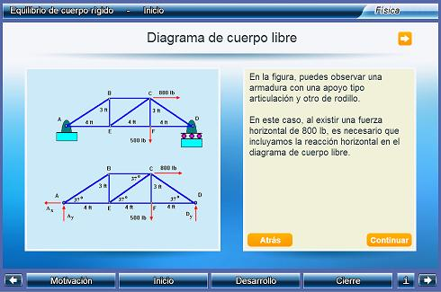 Descargar |
Equilibrio cuerpo rígido
Toda estructura se encuentra soportada por uno o más apoyos, para su análisis es importante determinar las fuerzas o reacciones que generan estos apoyos, puesto que son ellos los que garantizan el equilibrio global de la estructura. Los objetivos de esta unidad son: * Dibujar el diagrama de cuerpo libre de un cuerpo rígido. * Determinar las reacciones de un cuerpo rígido, usando las ecuaciones de equilibrio. Área: Matemáticas Nivel: Licenciatura |
|
|
Un_078_FuerzaInternas 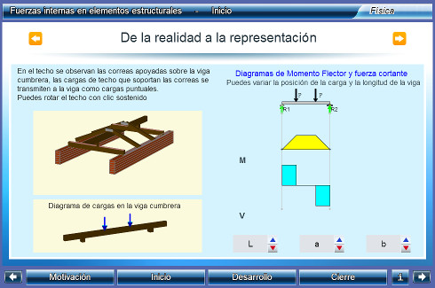 Descargar |
Fuerzas internas
Todo elemento estructural sometido a fuerzas externas reacciona con otras fuerzas internas, las cuales permiten conocer si el elemento está en capacidad de resistir dichas fuerzas. El diseño de un elemento estructural depende de las propiedades del material y de la determinación de las fuerzas internas del elemento. Así las cosas, en esta unidad, tendremos como objetivos: Determinar las fuerzas internas que actúan en un punto cualquiera de un elemento estructural. Elaborar los diagramas de fuerza cortante y de momento flector. Área: Matemáticas Nivel: Licenciatura |
|
|
Un_091_EcuacionDeOnda1D 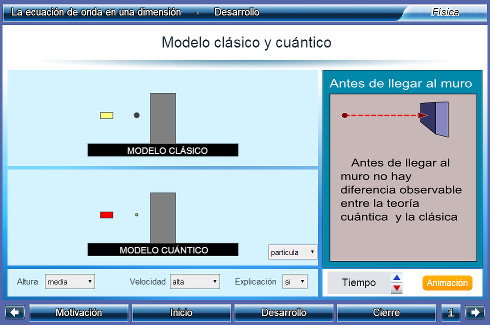 Descargar |
La ecuación de onda en una dimensión
En unos pocos casos la ecuación de onda, y en particular la de Schrödinger, tienen una solución analítica exacta que ejemplifica algunas propiedades importantes de los sistemas cuánticos. En esta unidad se estudia la ecuación de Schrödinger en una dimensión como un caso particular de las ecuaciones diferenciales Ordinarias de segundo orden. Se presentan el efecto Tunel, la partícula libre, el pozo de potencial, la barrera de potencial y el coeficiente de transmisión Área: Física, Ondas, Ecuación de Schrödinger Nivel: Licenciatura |
|
|
Un_092_CamposElectricosConductores 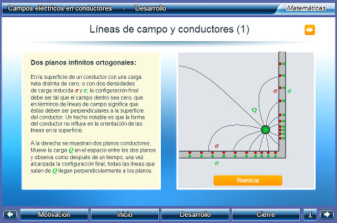 Descargar |
Campos eléctricos en conductores
A lo largo de esta unidad se desarrollará el concepto de campo eléctrico en un conductor, haciendo énfasis en la configuración alcanzada por la distribución de carga eléctrica en la superficie del conductor, para explicar porque dicha configuarción genera que el campo eléctrico del conductor sea cero. Área: Física, Electricidad y Magnetismo, Conductores eléctricos Nivel: Licenciatura |
|
|
Un_093_DifraccionDeBragg 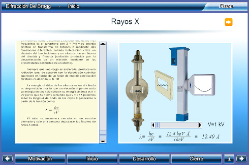 Descargar |
Difraccion De Bragg
En esta unidad didáctica el estudiante conocerá las propiedades y la forma en la que se crean los rayos X,además conocerá los tipos de estructura que tienen los materiales especialmente la de los cristales que tienen tamaños similares a la longitud de onda de los rayos X. Finalmente entenderá la ley de Bragg y conocerá su utilidad en la cristalografía. Área: Física, Mecánica,Óptica, Física Moderna Nivel: Licenciatura, Bachillerato |
|
que implemente el Canvas de HTML5, como por ejemplo: Google Chrome, Mozila Firefox o Safari |